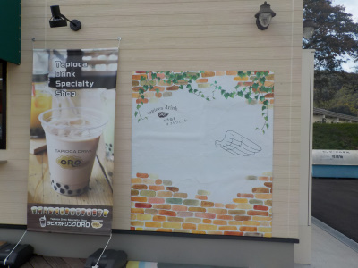
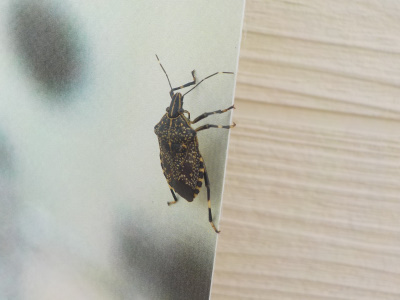

いいものを探そう ～出雲らへん～
島根県雲南市三刀屋町（みしまや三刀屋店横）
2019/10/22
コトリエットにカメムシがいました。
新しい施設でお洒落な場所ですが、時季なので普通にカメムシがいました。

タピオカ専門店のタピオカが飲みたくて寄りました。

タピオカがちょっと甘くて美味しかったです。
ストローにタピオカが詰まりそうなのを、吸う勢いを調整しながら飲むのがいいですね。
今日は冷たいドリンクを飲んだんですが、次はホットドリンクのタピオカを飲んでみたいです。
【ページTOP】
【地域TOP】
【HPTOP】
コトリエットと言えばタピオカ。
【おいしいものを食べよう。】【たくさん寝よう。】
【ソロ活をしよう!】【季節感のあることをしよう。】【動画視聴はほどほどに。】【当サイトの全てのコンテンツは無断転載禁止です。】